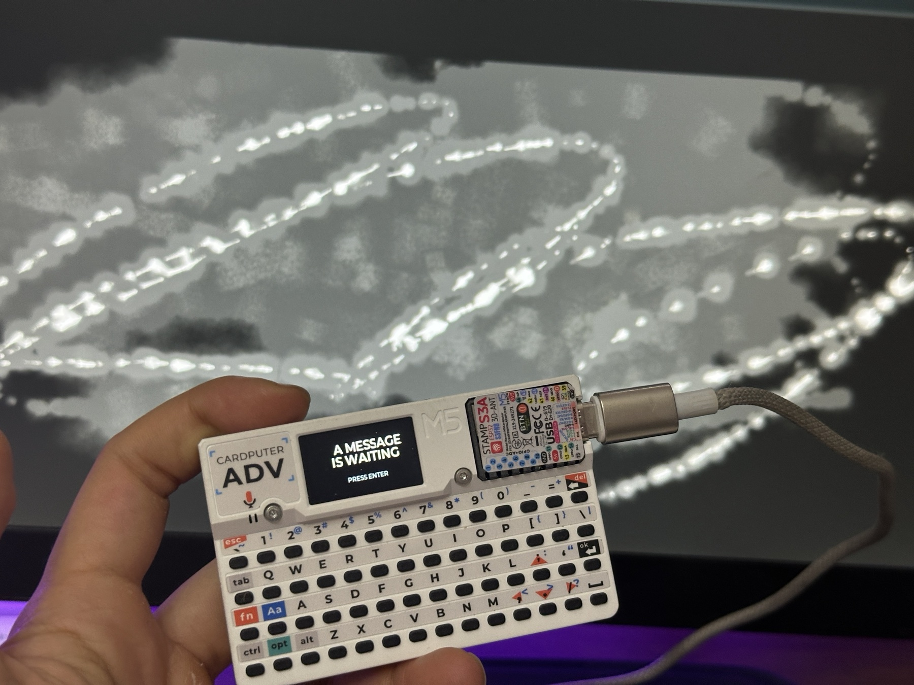
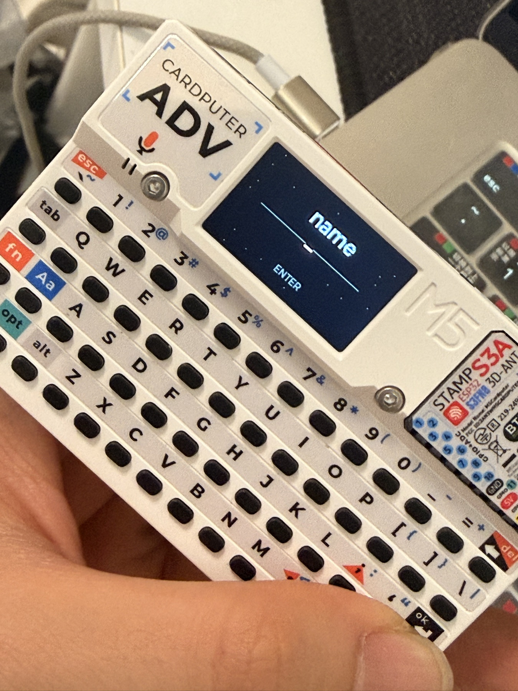
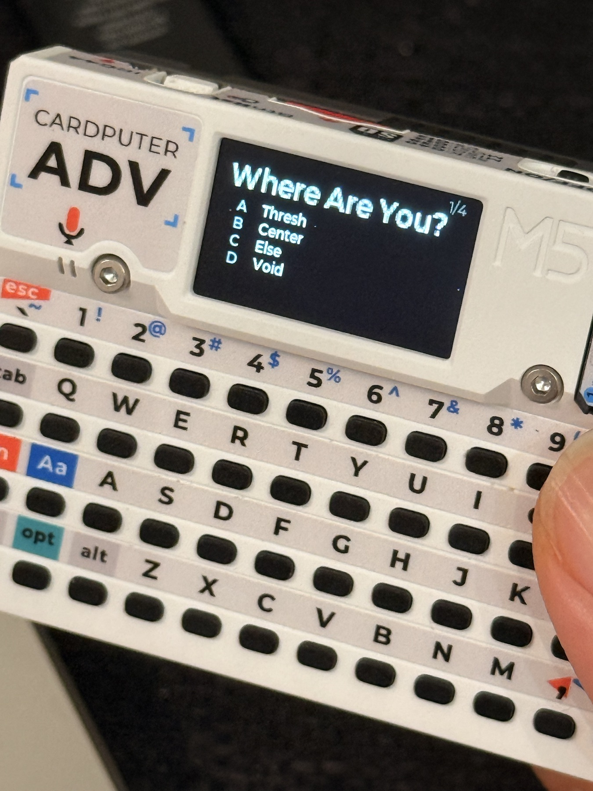

01 / Project position and system
A perceptual field whose condition changes through presence.
Core proposition
The work does not represent transformation. It constructs conditions in which transformation can be perceived.
Nietzsche’s chapter “On the Three Metamorphoses” in Thus Spoke Zarathustra gave language to changes I recognised from lived experience. It prompted a further question: if a philosophical text can reorganise one reader’s perception, can an interactive field create conditions in which other people notice shifts of their own?
Personal resonance / not autobiography
I had experienced carrying, resisting and becoming as real changes, but not as clean or dramatic stages. Even rupture did not feel like a spectacular collision. It appeared gradually and naturally, overlapping with responsibility, hesitation, curiosity and the making of new possibilities.
The work therefore does not retell my biography or assume that every visitor shares the same story. It uses that experience to ask whether subtle internal change can become perceptible without being explained, diagnosed or represented literally.
Research contribution
A proposed practice-based method for translating philosophical structures into behavioural rules without turning them into illustration, classification or psychological profiling.
Research questions
01Translation→How can a philosophical structure become a responsive system without becoming a symbolic image?
02Perception→Can overlapping inner forces be perceived through density, rupture and opening without naming or judging the viewer?
03Embodiment→How do directional input, bodily presence and a physical threshold alter the way a field is entered and experienced?
Three coexisting forces / never three stages
01 / CamelWeight
Burden, endurance, repetition, lingering and accumulation.
02 / LionFriction
Resistance, contradiction, interruption, displacement and rupture.
03 / ChildPlay
Exploration, connection, opening, creation and new possibility.
Weight + Friction + Play remain present in changing proportions. This is an operational reinterpretation for the interactive system, not a claim that Nietzsche’s three metamorphoses are non-sequential. The viewer is never classified.
Two linked rule layers
01Trace analysisSpeed / duration / repetition / directional change / exploration
02Trace forcesEach completed path resolves into Weight / Friction / Play in changing proportions
03Residue fieldMovement / stillness / time and optional camera change tune Weight / Rupture / Emergence
04Shared visual grammarDust / trace / blur / noise / afterimage / displacement produce density, rupture, residue and opening
Rule evidence / input → state change → perceptual consequence
EncounterRuleVisible consequence
MoveMovement deposits an active trace.The path extends and the field ruptures.
PauseStillness allows residue to accumulate.Density gathers around the last position.
StayDuration alters the field state.The image thickens, fades, or leaves an afterimage.
Two inputs / two kinds of presence
Mouse / intentional movement
Precise, directional, trace-making
Movement establishes direction and fine trace. Repetition builds local density; abrupt changes introduce friction; exploratory paths open unused space.
Optional camera / coarse visual change
Atmospheric, frame-based, less precise
If the visitor actively enables it, low-resolution luminance differences detect coarse movement and brightness change in the camera frame. These signals affect global pressure, breathing and instability differently from the mouse.
Current camera test / reflection
In the current prototype, larger changes in the camera frame intensify the field’s bright points and can produce a more expansive burst. This began as an attempt to express a desire for change when another presence enters the system.
The next test is whether that response is too explosive for the project’s quieter logic. Camera presence will be differentiated through global pressure, breathing and brief instability rather than another directional trace.
Camera ethicsOpt-in only. A 48 × 36 luminance sample is processed locally and temporarily; no image is displayed, stored or transmitted, and no identity recognition is used. The field remains usable without camera access.
Restricted visual primitive library
DustTraceBlurNoiseAfterimageDisplacement
Development trajectory
The project began as a non-interactive particle state. Because this was my first sustained experiment with web coding, interaction entered gradually: first through mouse direction and trace, then through optional low-resolution camera sensing as an attempt to introduce a different kind of movement, rhythm and breath.
Particles, diffusion and water-like movement were chosen because the three forces felt microscopic, elusive and continuously flowing. Brighter halos, decorative light and firework-like effects were tested and rejected: their visual impact made transformation appear more violent and theatrical than it felt in lived experience.
01 / Initial stateParticlesNon-interactive matter in continuous transition.
02 / Direction entersMouse traceIntentional movement gives the field a local path.
03 / Body entersCamera presenceCoarse movement and brightness change affect the field as atmosphere.
Visual development / not three metamorphosis stagesParticle state → directional input → embodied input
Practice-based methodology
01MapTranslate philosophical qualities into behavioural conditions
02BuildDevelop a restricted visual grammar through creative coding
03TuneAdjust parameters through repeated perceptual and embodied tests
04ObserveCompare participant descriptions without giving philosophical labels in advance
05ExpandTranslate the tested interaction from screen to threshold and spatial field
Working now / two real prototypes
Web Field + M5Stack
The live field, mouse response, opt-in coarse camera sensing and handheld entry test are current working experiments. The Web Field and M5Stack remain technically separate.
Next research stage
Differentiate → map → observe
Strengthen the difference between mouse and camera, make the force-to-primitive mapping more explicit, then conduct participant observation before technical integration.
Participant observationNot yet conducted. A planned first study with 6–8 consenting participants will combine a short unguided interaction with a post-interaction description, then compare recurring descriptions of stillness, repetition, rupture and opening without giving philosophical terms in advance. Camera use will remain optional.
The field does not tell the viewer what state they are in. It changes with the way they enter it.
02 / Spiritual interface prototype
A physical threshold, not a remote control.
The M5Stack Cardputer ADV tests what changes when a philosophical encounter becomes handheld, private and intentional. Its small display, physical keys and intervals of waiting create a threshold before the viewer enters the perceptual field.

01 / Device and field — two current prototypes in relation

02 / Name entry — a physical gesture of arrival

03 / Variable prompt — one question within a changing sequence
Evidence statusThe photographs document the working standalone interface. Communication between the device and Web Field has not yet been implemented, and the prompt archive and response wording remain under revision.
01Boot
THE THREE METAMORPHOSES
02Name / entry
ENTER YOUR NAME
03Waiting
A MESSAGE IS WAITING
04Three prompts
Three questions are drawn from a changing set. The sequence differs between encounters and the participant answers using the physical keyboard.
05Open response
The answers lead to one short response from a variable set. It offers an indication rather than a score, diagnosis or fixed metamorphosis.
Conceptual relationship / technically separate today
01M5Physical entry interface / name, waiting, three variable prompts and an open response
02WebPerceptual field / movement, stillness, repetition and presence become visual conditions
03LaterM5 entry state activates the web or spatial field through a local connection
Here “spiritual interface” means a reflective, philosophical threshold rather than a religious claim or psychological instrument. The name is a temporary gesture of entry. Randomised prompts and variable responses prevent a single prescribed path, but the interface does not score, diagnose or tell the participant which metamorphosis they are.
03 / Speculative spatial development
The same perceptual system, expanded from screen to space.
The future installation is not a separate artwork. It translates the current digital and handheld experiments into a physical threshold where whole-body movement extends the directional role of the mouse and residue occupies projection, surface and atmosphere.
Translation of scale
01Mouse→ body movement
02Browser screen→ spatial perceptual field
03M5 input→ threshold interface
04Camera presence→ spatial sensing
05Digital residue→ projection / surface / material residue
Three spatial components
01 / EntranceSpiritual Interface
A small, deliberate entry action acknowledges presence before activation.
02 / TransitionThreshold
A membrane, slit or partial opening marks passage without becoming a theatrical portal.
03 / InteriorPerceptual Field
Projection, scrim and exposed structure hold a quiet, incomplete and responsive condition.
Installation overview01 / 04
Speculative Installation Proposal, 2026AI-assisted spatial visualisation developed from the current working prototype.